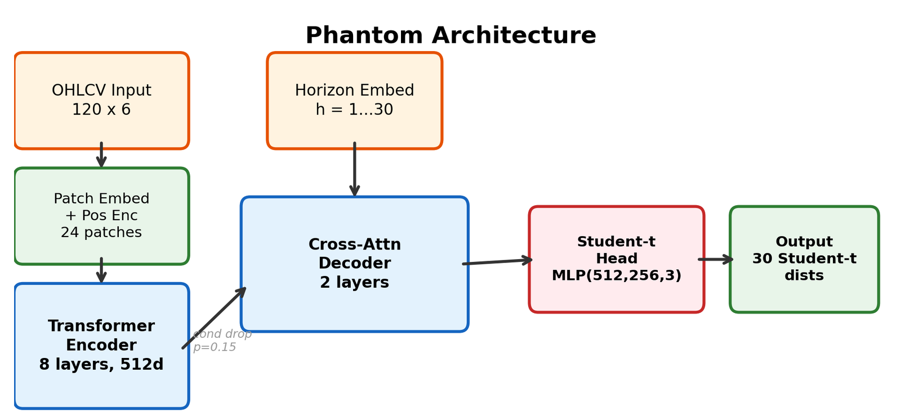
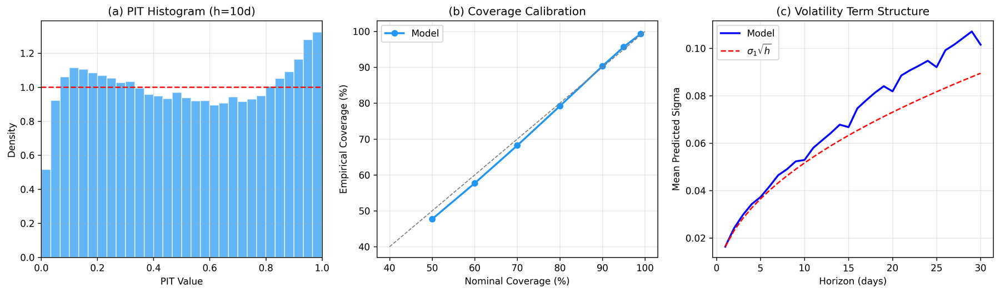
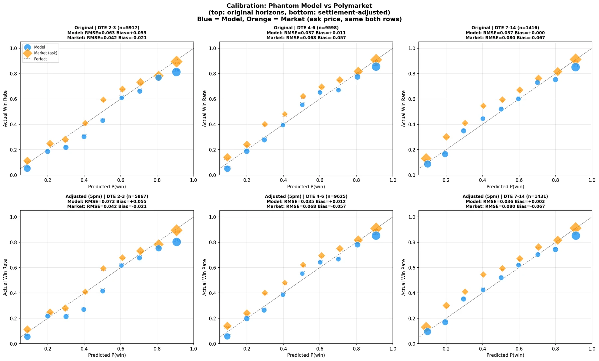

Work · forecasting research · 8 min read
Phantom: distributional return forecasts for 362 cryptocurrencies
Does daily price and volume data say anything about which coins will beat their peers over the next month? A little, and it comes with a calibrated distribution. The most useful part of the project was the audit that corrected my own headline.
The question and the model
Absolute crypto returns are, as far as this project could tell, unpredictable from price and volume alone (versions 3 and 4 below). Relative returns are a different question: after subtracting the cross-sectional mean each day, is there a signal about which of 362 Binance-listed coins will do better than the others over the next 1 to 30 days? Phantom answers that with a distribution rather than a point: for every coin and every horizon it outputs the location, scale and tail weight of a Student-t.
The input is 120 days of six engineered channels per coin (log return, intraday range, body ratio, log volume ratio, trailing volatility, 10-day momentum), cut into 24 patches and encoded by an 8-layer pre-norm Transformer (512 dimensions, 8 heads). A 2-layer cross-attention decoder holds 30 learned horizon queries that attend to the encoded history in one pass, and a small MLP maps each decoded vector to (μ, σ, ν).
Condition dropout at p = 0.15 and a variance penalty on the encoder stop the decoder from ignoring its input, a collapse I diagnosed during the synthetic pretraining phase (versions 1 and 2), when zeroing the encoder output moved the predicted mean by only 0.018. The loss is negative log-likelihood plus 0.5 × CRPS plus a √h-weighted mean-squared term plus the variance penalty. Training is two-stage: pretrain on 413 assets across crypto, equities, FX and commodities, then fine-tune on the 362-coin universe. 31.7 million parameters, one A100, bf16.

Out-of-sample results
Test window January 2025 to March 2026: 144,630 coin-days over 430 dates, none of them seen in training or validation, with the caveat that windows adjacent to the split share up to 30 days of context. The rank information coefficient (Spearman correlation between predicted and realised relative return across coins, averaged over dates) is 0.124 at the 10-day horizon and rises monotonically with horizon, as a drift signal should against noise that grows with √h.
The signal is stable in sign, not in size: IC is positive in every one of the 15 test months, between 0.036 and 0.200.
Sorting coins by the 10-day forecast gives monotonic realised returns across quintiles (Spearman 1.00) and near-monotonic returns across deciles (0.99; D5 and D6 swap places by 0.03 percentage points, inside their standard errors), with the bottom decile losing 2.45% and the top gaining 1.22% per 10-day window on average.
The distributional part holds up: the 50, 80, 90 and 95% prediction intervals contain 47.7, 79.2, 90.3 and 95.7% of realised 10-day returns, the probability integral transform is close to uniform, and the model drives ν to about 2, which is to say it learned that crypto returns have very heavy tails and priced them.

Against the baselines, honestly
Phantom has the highest IC among the directional baselines I built (momentum, mean reversion, volume, random). A naive low-volatility sort has a higher raw IC, 0.165, and is 0.63 rank-correlated with Phantom's signal. Phantom's independent contribution is significant only within the mid- and high-volatility terciles (spread t-statistics 2.6 and 4.1), and the two signals combined reach IC 0.157. That is the accurate description and the one in the README.
The audit
I found this three and a half months after the release, while preparing the work for applications: the Sharpe looked too high to believe, so I audited the evaluation code and traced it to the long-short series being 10-day forward returns sampled daily and annualised as if each observation were a day. The fix in the repository is a √10 rescale of that overlapping-series Sharpe, equivalent up to residual autocorrelation to recomputing on non-overlapping 10-day blocks.
The same pass documented that the universe is survivor-biased (only pairs still trading in March 2026 were fetched, so coins delisted during the test period are missing from training, testing and from the cross-sectional mean itself), that the short leg is partly unimplementable because much of the bottom quintile has no margin or perpetual-futures market, and that the Newey-West lag I used under-corrects for the MA(9) overlap; conservative lags still leave the IC t-statistic above 6. README, paper draft, experiment log and evaluation code were all corrected, with the old numbers left visible as errata rather than deleted.
After realistic frictions I consider a net Sharpe of 1 to 2 plausible. The cost table below is the corrected one; the results figures in the repository's plots directory were generated before the audit and still carry pre-correction labels, which is why the IC, decile and baseline charts on this page are drawn from the underlying data rather than embedded; the architecture and calibration figures above contain no annualised numbers and are unaffected.
| Scenario | One-way cost | Gross/net Sharpe, horizon-corrected |
|---|---|---|
| Gross | 0 bps | ≈ 4.1 |
| Standard exchange fee | 10 bps | ≈ 2.9 |
| Conservative | 30 bps | ≈ 0.4 |
| Break-even | ≈ 34 bps | 0 |
Eight versions, mostly failures
The project was structured as an ablation, and the experiment log records each version's hypothesis and result. Five of the eight versions were negative.
| Version | Change | IC (10d) | Sharpe, corrected | Finding |
|---|---|---|---|---|
| v1, v2 | Pretrain on synthetic SDE paths (GBM, Merton, Kou, Bates, GARCH) | Reached the oracle CRPS on synthetic data (0.064 versus 0.065 theoretical); transferred nothing to real assets. | ||
| v3 | Pretrain on real multi-asset data | 0.00 | Well-calibrated uncertainty, no directional signal. | |
| v4 | Multi-horizon absolute returns | 0.00 | Memorised training directions, did not generalise. | |
| v5 | Predict cross-sectionally demeaned returns | 0.09 | ≈ 1.5 | Signal unlocked; concentrated in crypto (IC 0.144) versus commodities 0.084, FX 0.007, equities 0.003. |
| v6 | Add funding-rate and taker-buy features; crypto-only fine-tune | 0.14 | ≈ 1.7 | The features added under 0.002 IC each; the gain came from training on crypto only. |
| v7 | 4-hour bars | 0.10 | ≈ 0.8 | Worse: adjacent windows share 99.7% of their bars, so 476k "samples" are about 80k daily windows. |
| v8 | Widen from 60 to 362 coins | 0.12 | ≈ 4.1 | Breadth diversified the long-short portfolio while mean IC fell slightly from v6. |
Could it be traded? A binary-option test
A two-day follow-up asked whether the same distributions price Polymarket's daily "BTC above $X" markets better than the market does. On 7,982 resolved BTC and ETH markets from August 2025 to March 2026, with each side's price read from its own order book, the model's probabilities were better calibrated than the ask price at four to six days to expiry (root-mean-square calibration error 0.035 against the market's 0.068) and overconfident by about five points at two to three days, which set a minimum-horizon rule.
Buying the side with edge and holding to settlement, with entry prices between 0.15 and 0.85, a 20% edge cap and ETH range markets excluded, turned $1,000 into $3,885 in the 7-month backtest (68% win rate, 1,120 trades, weekly Sharpe 2.05, drawdown −48%). The trading page quotes a delta-aware-sizing variant of the same backtest without the edge cap: $3,925, 1,118 trades, 67% win rate, weekly Sharpe 2.2, drawdown −36%.
The caveats are large enough that I present this as a calibration result, not a strategy: one seven-month window during which BTC fell about 42% while the strategy was structurally short BTC (it mostly buys NO on "above" markets); fills assumed at the full displayed ask; positions valued at cost until settlement; and, most instructively, an uncapped variant of the run (no 20% edge cap; $4,714 at the ask) executed as mid-price limit orders lost money (win rate 67% to 54%, ending at $787) because of adverse selection. I quote the capped run above because the cap is in the documented parameters.

What I would do differently
- Fetch the universe as of each date, including delisted pairs, before training anything. Survivorship is the largest unquantified bias here and the fix is a data-collection choice.
- Evaluate on non-overlapping windows first and let the overlapping series be the supplementary view. The √10 error could not have happened in that order.
- Compare against the low-volatility sort on day one. It is the obvious benchmark for a relative-return signal in crypto and it should have framed the result from the start.